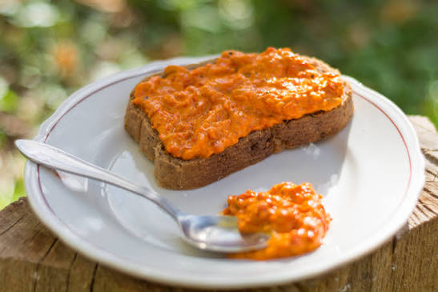

Home Page
Ajvar

A popular Balkan spread, especially in Serbia and North Macedonia
To make Ajvar Spread, you need to throw together a bunch of red bell
peppers, some eggplant, sunflower oil, salt, white or wine vinegar, and maybe some sugar.
Ingredients:
- Red Bell Peppers - 5.5 lbs
- Eggplant - 1.5 lbs
- Sunflower Oil - 3/4 cup
- Salt - 1.5 tablespoons
- White or Wine Vinegar - 1.5 tablespoons
- Sugar (optional) - 1.5 tablespoons
Steps:
- Bake the peppers and eggplants until they char
- Put the roasted ingredients into a closed bag for the steam to loosen their skin
- Strip the charred skin, open, and scrape the vegetables
- Drain the peeled flesh overnight
- Mince the flesh until it is finely chopped
- Put it into a pot, add half the oil, cook on low and stir
- Pour the remaining oil over the next 2 hours
- Stir in salt, sugar, and vinegar in the last 15 minutes
- Pour the hot ajvar into jars and seal tightly